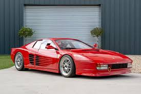
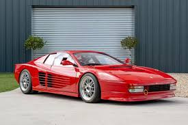

1929 - Fundación
Enzo Ferrari fundó la Scuderia Ferrari en Módena, Italia.
1947 - Primer coche Ferrari
Se construyó el primer automóvil con la marca Ferrari: el 125 S.
1950 - Debut en la Fórmula 1
Ferrari debutó en la Fórmula 1 y comenzó su legendaria historia en las carreras.
Presentación de modelos icónicos
Ferrari lanzó modelos como el 250 GTO, Testarossa y LaFerrari.
 
